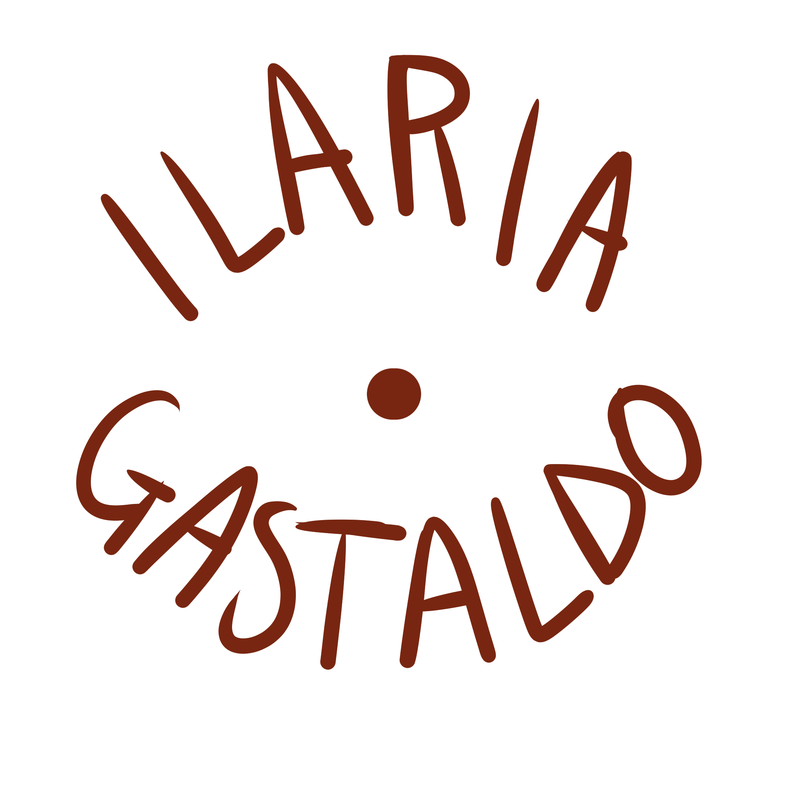

-

- Ho un cuore creativo ;)

Questi sono alcune delle mie illustrazioni.
Realizzo ritratti e disegni di ogni genere in stile digitale.
Contattatemi per commissioni o richieste.
Vi invito a dare un'occhiata al mio profilo Instagram,
o al mio Canale YouTube.